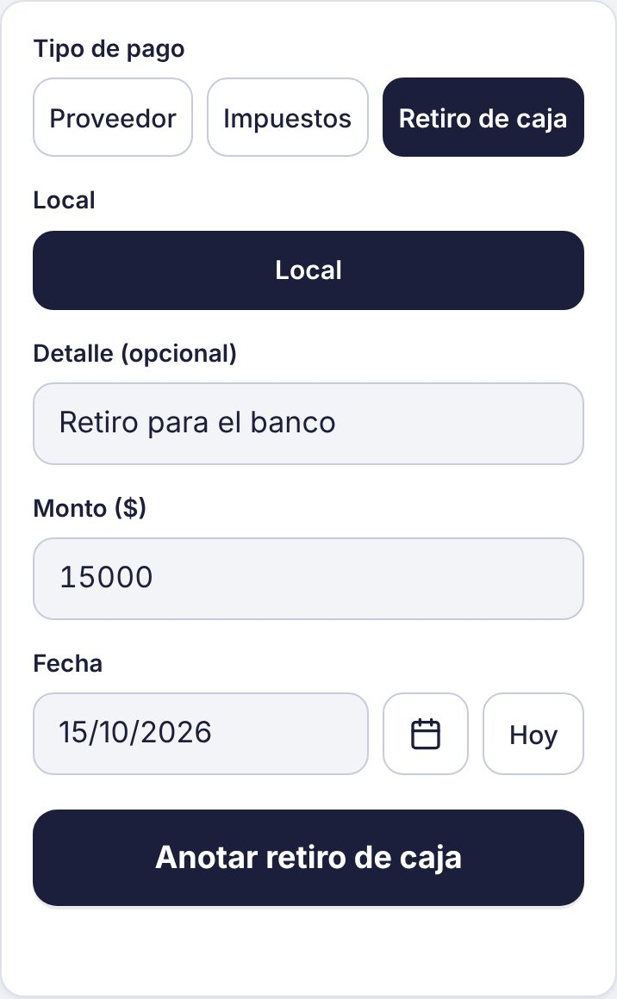
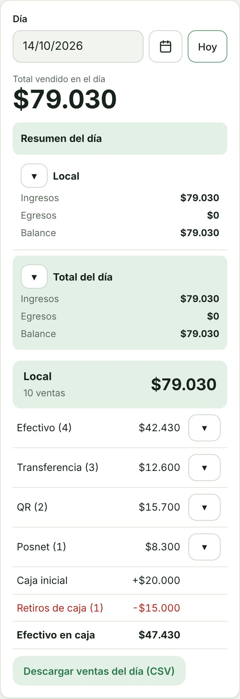
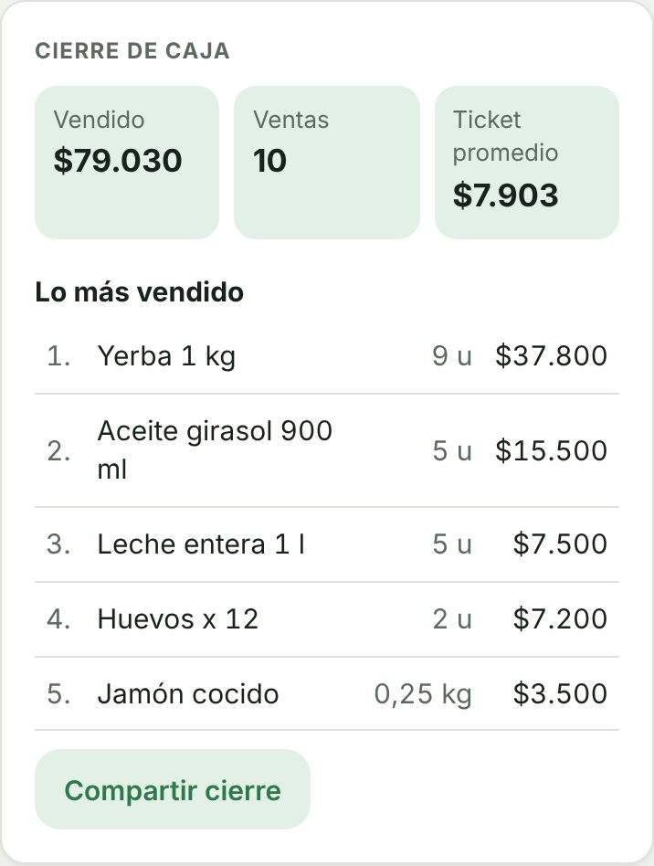
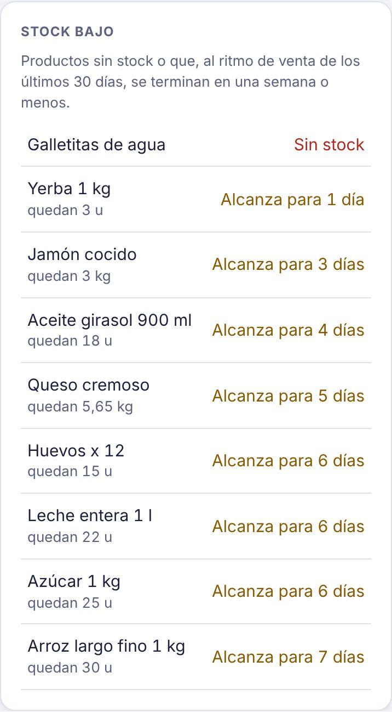

Cómo hacer la caja inicial y el cierre de caja
Con la caja inicial y los retiros anotados, Kovo te dice cuánta plata en efectivo tiene que haber en la caja al final del día.
-
Anotá la caja inicial
Al abrir, entrá a Caja inicial, elegí el local y poné con cuánto efectivo arranca la caja.

-
Anotá los retiros
Si sacás plata de la caja durante el día, anotalo en Pagos como Retiro de caja. No cuenta como gasto en el balance, pero se descuenta del efectivo.

-
Mirá el resumen del día
En Resumen ves el total vendido, cuánto entró por cada medio de pago y, abajo, el efectivo que tiene que haber en la caja: caja inicial más ventas en efectivo menos retiros.

-
Cerrá la caja
En la tarjeta Cierre de caja tenés lo vendido, la cantidad de ventas, el ticket promedio y lo más vendido del día. Con Compartir cierre lo mandás por WhatsApp.

-
Revisá el stock bajo
Si cargaste stock, Kovo te avisa qué productos se terminaron o se terminan en una semana al ritmo que venden. Así sabés qué pedirle al proveedor.
